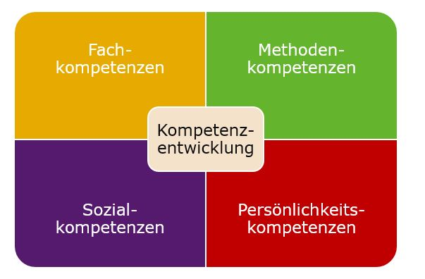

Methodische Kompetenzen:
-
Analysefähigkeit
-
Problemlösungsfähigkeit
-
Kritisches Denken
-
Organisationsfähigkeit
-
Zeitmanagement
-
Entscheidungsfähigkeit
-
Argumentationsfähigkeit

Soziale Kompetenzen:
-
Konfliktlösungsfähigkeit
-
Kommunikationsfähigkeit
-
Teamfähigkeit
-
Führungsfähigkeit
-
Kulturelle Sensibilität
-
Empathie
-
Zusammenarbeit und Zusammenhalt
Fachliche Kompetenzen:
-
Expertenwissen in einem bestimmten Bereich
-
Kenntnisse in bestimmten Technologien oder Werkzeugen
-
Berufserfahrung
-
Branchenkenntnisse
-
Methodenkompetenz
-
Innovationsfähigkeit
Selbstkompetenz:
-
Verantwortungsbewusstsein
-
Zielorientierung
-
Selbstmotivation
-
Selbstreflexion
-
Durchhaltevermögen
-
Selbstbewusstsein
-
Flexibilität und Anpassungsfähigkeit